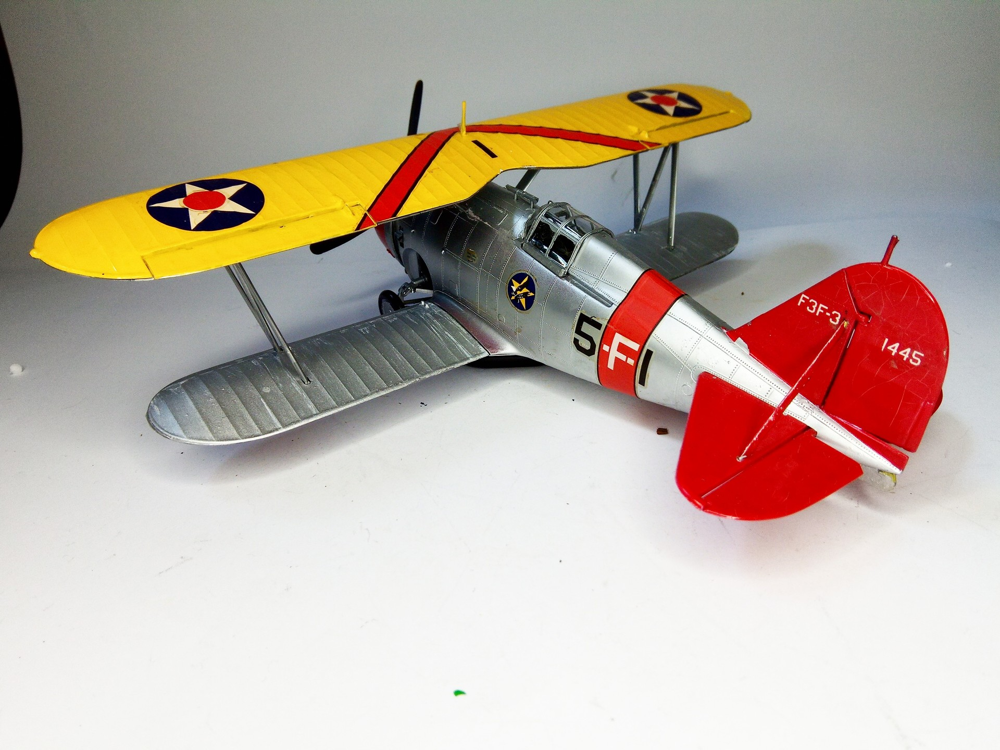
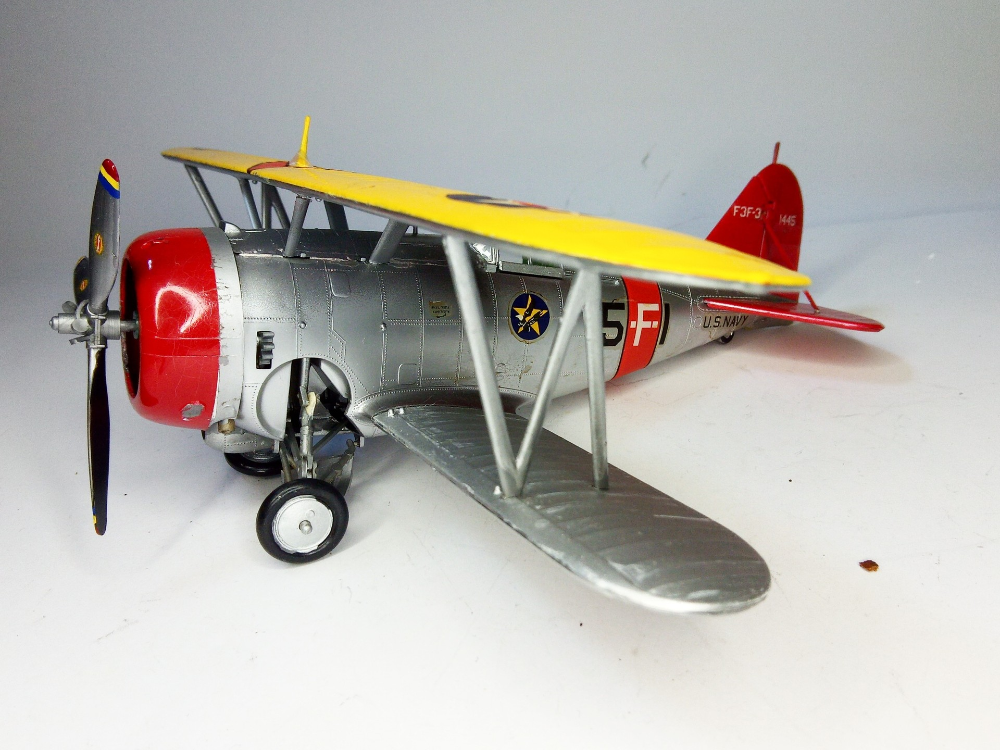

Aerei · scale model archive
Grumman F3F-3
Grumman F3F-3 — Kit: Revell, Scale: 1/32. VF-5 1938 - USS Yorktown Intriguing kit, even providing working retractable undercarriage. Lovely pre-war…

Photo gallery

English description
VF-5 1938 - USS Yorktown
Intriguing kit, even providing working retractable undercarriage. Lovely pre-war livery
#1/32 #Revell #Grumman #F3F3
Descrizione italiana
VF-5, 1938, USS Yorktown. Kit intrigante, con carrello retrattile funzionante. Bellissima livrea prebellica.